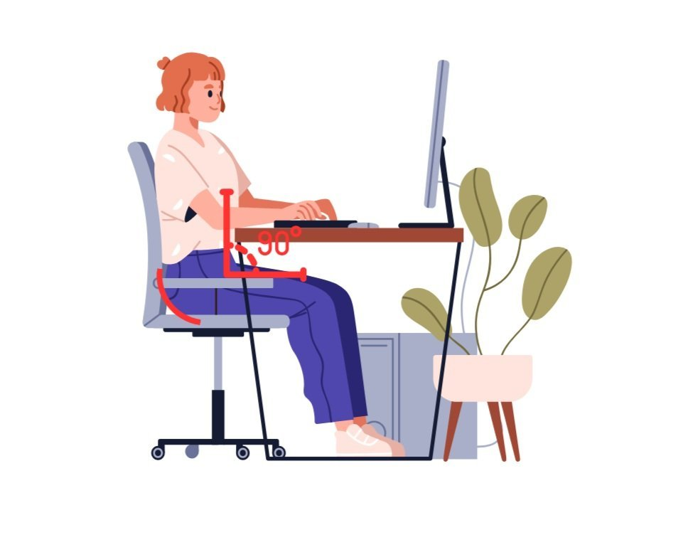
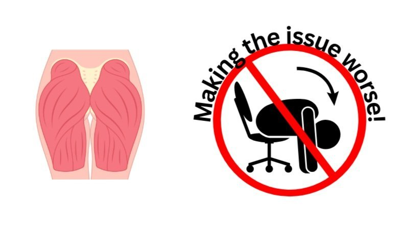
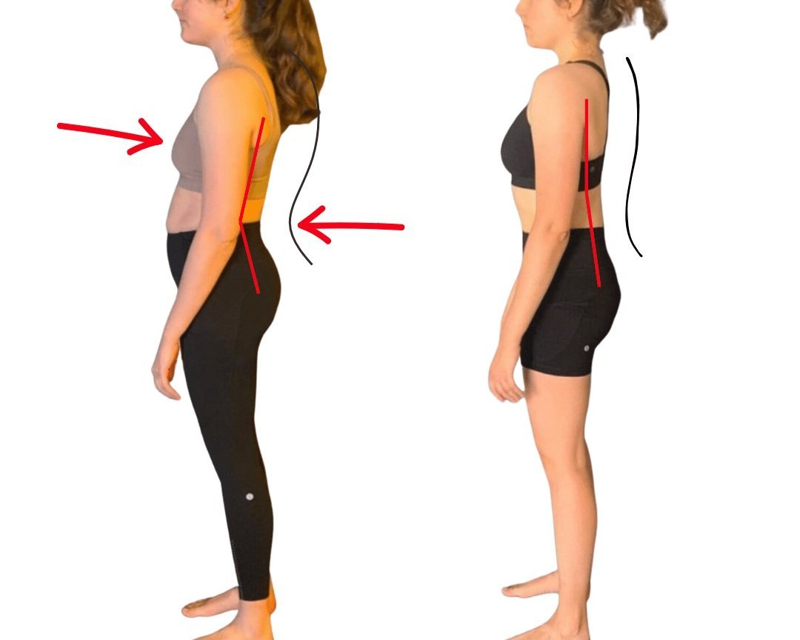

Here is the key to reclaiming your posture after a desk job!
Welcome to our latest exploration into human biomechanics! If you're somebody who has to sit a lot and you are concerned about your posture, this post is made for you. Have you ever wondered how your daily sitting habits are impacting your posture? Let's dive into the world of glutes, core muscles, and spinal health to uncover the REAL effects of sitting all day.
The Impact of Prolonged Sitting on Posture:
When we sit for extended periods, our glutes are in a constantly stretched state, losing their strength and functionality. This phenomenon leads to what we call 'flaccidly stretched glutes.' Simultaneously, our core muscles, which should be actively supporting our spine, remain flaccidly contracted due to inactivity. This imbalance creates a domino effect on our posture when we stand up.
As we rise, our weakened core and glutes struggle to activate effectively. This leads to an anterior shift in our hips, pushing them forward. This shift not only disrupts our natural alignment but also pulls our spine into a kyphotic curve, a posture where the spine rounds forward.
Visualising the Problem:

Notice in this image, the sitting position lengthens the glutes and shortens the core. Can you see these patterns in your own posture? Let’s look a the longterm implications of spending extended periods of time in this position.
Anatomy and Function:
Glutes, The Key To Good Posture:
The glutes are paramount in maintaining upright posture. They stabilise the pelvis and support the lower back. Prolonged sitting weakens these muscles, contributing to poor posture. But the role of the glutes goes beyond just stabilisation; they are crucial drivers in the movement of our body, especially when transitioning from a hip hinge or flexion position to an extended position. Hip flexion is the position you are in when you are seated, hip extension is when you are entirely upright and your hips are directly below your torso or beyond.
When we perform activities like standing up from a seated position or walking, our glutes are responsible for driving the hips forward. This action is essential for moving our body out of a hip-hinged position (where the hips are bent) into full hip extension. The gluteus maximus, the largest of the glute muscles, plays a key role in this movement. It works to extend the hip, an action critical in the final push-off phase of walking and in maintaining an upright posture.
However, when the glutes are weakened due to prolonged sitting, their ability to contract properly and effectively is compromised. This loss of proper gluteal contraction makes it difficult to drive the hips forward in a manner that stabilises the pelvis. As a result, the pelvis can remain in a tilted position, often leading to an anterior pelvic tilt. This tilt puts additional strain on the lower back, as the spine tries to compensate for the lack of support and stability from the glutes.

Without strong, well-functioning glutes, the body struggles to pull the spine into its optimal position. This can lead to a chain of postural issues, as other muscles are forced to overcompensate for the lack of support from the glutes. Over time, this can lead to chronic back pain, reduced mobility, and an overall decline in postural health. From a postural standpoint, it often leads to the hips chronically sitting too far behind you, or sitting flaccidly too far forward because the pelvis can no longer stabilise in a neutral position.
Therefore, focusing on strengthening and properly engaging the glute muscles is crucial for anyone looking to improve their posture, particularly those who spend a significant portion of their day sitting. Regular glute-strengthening exercises, along with conscious efforts to engage these muscles during daily activities, are key steps in correcting and maintaining proper posture.
Core Muscles, Negating the Effects Of Constant Sitting:
A strong core is indeed the foundation of a healthy spine. It's a complex network of muscles that extends beyond the abs, including the muscles around the trunk and pelvis (part of your Transverse Abdominis). These muscles support the upper body and play a pivotal role in maintaining spinal alignment and overall posture. However, when we engage in prolonged sitting, the core muscles can become weakened, leading to a cascade of postural issues.
The core muscles include the rectus abdominis, obliques, transverse abdominis (TVA), and the muscles of the lower back. These muscles work in concert to support the spine, maintain pelvic alignment, and facilitate movement. In a standing position, the core muscles are continuously engaged to keep us upright and stable. They help distribute the weight of the upper body evenly, reducing strain on the spine.
During prolonged sitting, however, these muscles are not actively engaged. This lack of engagement leads to a weakening of the core muscles over time. A weak core fails to adequately support the spine and keep the pelvis in its proper alignment. Consequently, this can lead to an exaggerated curvature of the spine, commonly known as lordosis, in the lower back area, and a protruding abdomen, which further disrupts our natural posture. Consider a core that is perpetually too short, attempting to engage in extension (maintaining strength and tension as it is stretched) - it is obviously going to struggle!

Moreover, a weakened core impacts our functional movements. Tasks such as lifting, bending, running, throwing and walking rely on a strong core for stability and efficiency. Without a robust core, these movements can become less efficient and more strenuous, increasing the risk of injury and further exacerbating postural issues due to compensation of other muscles and over-all poor spine health/positioning.
To counteract the effects of prolonged sitting, it's crucial to incorporate exercises that strengthen the entire core in integration with the rest of the body and in relation to the gait sequence. This includes not just the superficial muscles like the abs, but also the deeper muscles that support the spine and pelvis. This is where Functional Patterns shines!
Strengthening the core muscles is not only about achieving a toned abdomen; it's about building a solid foundation for the entire body. A strong core leads to better posture, reduced risk of back pain, and improved functional performance in daily activities. Therefore, regular Functional Patterns core-strengthening exercises are essential, especially for individuals who spend considerable time sitting.
The Thoracic Spine: Central to Posture and Spinal Health
The thoracic spine, which comprises the middle segment of the vertebral column, plays a vital role in overall posture and spinal health. It is responsible for supporting the upper body and maintaining the natural curve of the spine. However, the health of the thoracic spine is often compromised by poor posture, especially due to extended periods of sitting.
When we sit for long hours, particularly with poor posture, the thoracic spine tends to become chronically stretched. This stretching can lead to a condition known as thoracic kyphosis, where the spine in the upper back rounds excessively. A common manifestation of this is a hunched appearance, often seen in individuals who spend a lot of time working at desks or computers.

This chronic stretching of the thoracic spine has several implications. Firstly, it leads to the weakening and underutilisation of the upper back muscles. These muscles, including the rhomboids, trapezius, and the muscles around the scapula, are crucial for maintaining an upright posture. They work to decompress the spine, support the shoulder girdle, and facilitate proper breathing. When these muscles are not engaged effectively, it can lead to a cascade of postural problems.
Moreover, a stretched thoracic spine can impact spinal health in several ways. It can reduce the mobility and flexibility of the spine, making it more susceptible to stiffness and pain. This lack of mobility can also affect the lower back and neck, as these areas may overcompensate for the reduced movement in the thoracic region. Although, stretching is obviously not the answer considering the stiffness is caused by too much chronic, low-grade stretching in this area.
In addition to postural issues, an overstretched thoracic spine can compromise respiratory function. The rib cage is attached to the thoracic spine, and its expansion and contraction during breathing can be restricted when the spine is not properly aligned. This can lead to shallow breathing and reduced oxygen intake, impacting overall health, your nervous system/stress response and energy levels.
To counteract these effects, it's essential to engage in activities that strengthen and mobilise the thoracic spine. Exercises such as thoracic extensions, upper back strengthening exercises, and activities that enhance shoulder mobility can help in maintaining the health of the thoracic spine. Functional Patterns is the only method that gets consistent results using our world-class thoracic spine exercises that are integrated with the entire body and gait cycle.
Decompressing the Spine: The Key to Better Posture:
Integrating the Role of Glutes, Core, and Thoracic Spine for Spinal Health
As you can now see, to address the negative impacts of prolonged sitting and improve spinal health, it's essential to understand the interconnected roles of the glutes, core muscles, and thoracic spine. Each of these components plays a critical part in maintaining proper posture and spinal alignment, and their collective functionality is key in decompressing the spine.
Reactivating Glutes and Core for Pelvic Stability:
The first step in combating the effects of prolonged sitting is to focus on reactivating the glutes and core muscles. These muscle groups are fundamental in stabilizing the pelvis and supporting the lower back. When they are strong and properly engaged, they help maintain the natural alignment of the pelvis and spine, which is crucial in preventing and correcting postural imbalances.
Thoracic Spine: The Backbone of Posture:
The thoracic spine, being the central segment of the spine, supports the upper body and is instrumental in maintaining the natural curvature of the spine. Ensuring its health and mobility directly affects the overall posture and integrity of the spinal column. When the thoracic spine is mobile and supported by strong surrounding muscles, it aids in decompressing the entire spine, reducing the risk of pain and stiffness.
The Synergy for Spinal Decompression:
When we look at the glutes, core, and thoracic spine as a collective unit, we see a powerful synergy. The strength and activation of the glutes are vital for maintaining pelvic alignment and preventing anterior pelvic tilt. A strong and active core supports the spine, reducing undue strain on the lower back. Meanwhile, a healthy thoracic spine ensures proper upper body posture and spinal curvature.
To effectively decompress the spine and improve posture, it's not just about focusing on one area but understanding how these three key components work together. Their collective functionality contributes to a well-aligned, decompressed spine, which is essential for overall postural health and well-being.
By incorporating routines and habits that promote the health and activity of these areas, individuals can see a significant improvement in their spinal health. However, it's crucial to approach this in a balanced and informed way. As biomechanics specialists utilising functional patterns protocols, we guide our clients through this process, ensuring they receive tailored advice and strategies that suit their unique postural needs. Everybody and every body is different, and having a gait analysis and postural analysis done by one of our biomechanics specialists is the perfect way to find out exactly what YOU need to do to permanently correct your poor posture, kyphosis, excessive anterior tilt, poor core and hip stability… you name it, we can fix it.
Integrated Approach to Posture Correction:
Proper posture is not just about standing straight; it's about how our body moves in alignment with our natural gait cycle. Incorporating the main four movements - standing, walking, running, and throwing - into your routine can dramatically improve your posture over time. This holistic approach ensures that your glutes, core, and thoracic spine work in harmony, promoting a natural, upright posture.
The way we sit and the length of time we spend sitting can profoundly impact our posture. By understanding the biomechanics behind it and actively working to correct it, you can improve not just your posture but your overall health. Remember, posture correction is a journey - it takes time, awareness, and consistent effort.
Are you ready to start your journey towards better posture? Subscribe to our blog for more insights, or contact us for personalised guidance. Share your experiences or ask questions in the comments below - let's embark on this journey together!